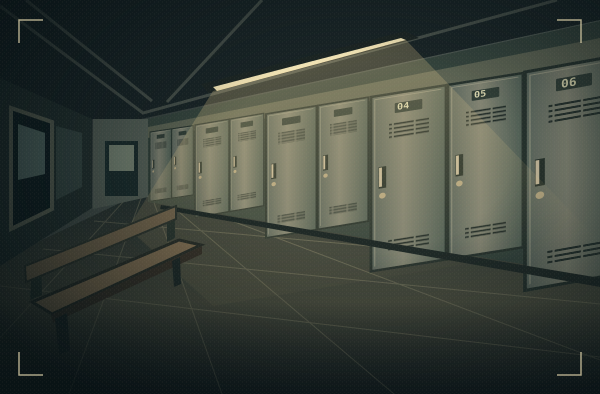

AFTER-SHOWملف 01
الشريط المقطوع
للشاهد رواية. هل تقدر أن تثبت عكسها بثلاث لقطات؟
من إفادة الشاهد
«بعد إغلاق المحطة، ما انفتح باب الخزانة رقم سبعة.»
اللقطات الثماني من الليلة نفسها، وساعاتها متزامنة. اختر ثلاثًا واعتمد الشريط قبل انتهاء الوقت، من دون كشف هوية الشاهد.
RVN / CAM 04STILL · 001

08لقطات خام
03لقطات في شريطك
00:30على ساعة المونتاج
AFTER-SHOW / 01
اللقطات الخام
الوقت المتبقي00:30
الشاهد: «بعد إغلاق المحطة، ما انفتح باب الخزانة رقم سبعة.»
اضغط على لقطة لإضافتها، واضغط عليها مجددًا لنزعها.
بعد المونتاج · ملف 01